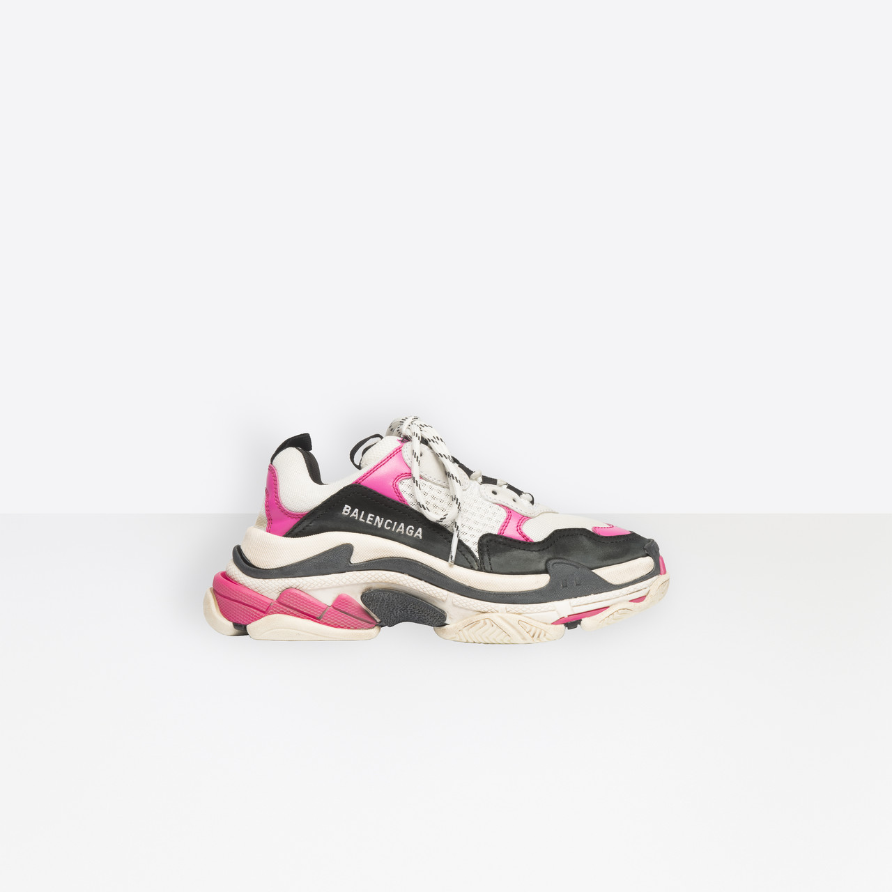

Spread the love
Khi bạn đủ kinh tế để có thể tự lựa chọn cho mình 1 đôi balenciaga với chất lượng “vừa phải” thì việc phân biệt được chất lượng rep thường & loại F1 sẽ giúp ích phần nào trong sự quyết định của bạn đó nhé. Hãy cùng tìm hiểu bài hướng dẫn dưới đây nhé.
Trong những năm gần đây, sức hút của những đôi giày sneaker đến từ thương hiệu Balenciaga là rất lớn. Từ siêu sao, người nổi tiếng cho đến giới trẻ đều “điên đảo” với các mẫu giày siêu chất, siêu đẹp này. Có thể nói, thương hiệu đã rất thành công khi để những đôi giày tự khẳng định chỗ đứng của mình trong lòng giới mộ điệu. Bởi lẽ, thiết kế, kiểu dáng của những đôi giày sneaker này không đi theo một quy chuẩn hay nét truyền thống nào. Nó tự phá vỡ mọi giới hạn về giày thể thao và mở ra một lối đi riêng cho chính mình.
Balenciaga xuất phát là thương hiệu thời trang cao cấp được sáng lập bởi Cristóbal Balenciaga Eizaguirre. Từ những ngày đầu ra mắt, những mẫu thiết kế của ông luôn khiến người tiêu dùng yêu thích bởi sự đơn giản và dị biệt. Trải qua nhiều biến cố, hiện tại thương hiệu thuộc tập đoàn Kering.
Thương hiệu thời trang đình đám này trải qua “ba đời” giám đốc điều hành sáng tạo. Nếu ví Nicolas Ghesquiére là người đã dành hơn 15 năm gắn bó với thương hiệu Balenciaga hay Alexander Wang đã nâng tầm giá trị của thương hiệu lên một vị trí mới thì Demna Gvasalia chính là người đã mở ra kỷ nguyên hoàn toàn mới và làm sống dậy cái chất riêng của Balenciaga.
Ông bắt đầu lấn sân sang thị trường giày sneaker và cho ra mắt những sản phẩm cực chất từ thiết kế, chất lượng đến bản phối màu ấn tượng. Không chỉ giới tiêu dùng mà ngay cả những chuyên gia trong ngành cũng để lại lời khen ngợi cho những đôi giày thể thao của hãng. Đặc biệt phải kể đến 3 dòng sản phẩm sneaker nổi tiếng từ thương hiệu “đỉnh cao này”:
Ra mắt vào năm 2016, nhanh chóng tạo nên cơn sốt lớn trong lòng giới mê giày thể thao. Sản phẩm được ví như “đôi giày ninja” với những cổ tất chân ôm trọn lấy cổ chân người dùng. Với thiết kế đơn giản, trơn nhẵn, gọn nhẹ và chất lượng,.. sản phẩm nhận được nhiều lời khen tặng từ giới chuyên gia.
Tiếp nối thành công của Balenciaga Speed Trainer, năm 2017 Balenciaga Triple S ra mắt thị trường và mở ra một kỷ nguyên hoàn toàn mới trong làng giày thể thao.
Mặc cho những nhận định, chê bai của giới chuyên gia như “Xấu lạ”, “nặng nề”,.. Những đôi giày Balenciaga Triple S vẫn tạo được sức hút riêng của mình và khiến người tiêu dùng điên đảo.
Thiết kế của Balenciaga Triple S vô cùng chất chơi và hầm hố. Sản phẩm sử dụng vô vàn các chất liệu khác nhau từ da lộn, lưới, cao su,… và bảng màu sắc phong phú. Điểm thú vị ở chỗ, mẫu sản phẩm này có trọng lượng cực lớn.
Những đôi giày sneaker đến từ thương hiệu Balenciaga chính hãng có mức giá khá cao, khoảng 545 – 910 USD ~ 12.500.000 – 22.000.000 Vnđ. Đối với những phiên bản giới hạn hay màu sắc độc lạ, khó tìm thì giá bán có thể leo thang đến 30.000.000 vnđ. Trước mức giá bán khá cao, không phải người tiêu dùng Việt nào cũng đủ điều kiện kinh tế để sở hữu hàng chính hãng. Vì vậy mà những đôi giày Balenciaga Rep & F1 được nhiều người quan tâm và lựa chọn để phù hợp hơn với túi tiền của mình.
“F1” là cụm từ viết tắt của Fake 1, so với hàng fake thì chất lượng còn kém hơn. Thiết kế, chất lượng, độ bền, êm ái,… chỉ gần 65% hàng chính hãng. Các mẫu giày sneaker F1 được bán đại trà trên thị trường với mức giá cực kỳ rẻ, chỉ từ 150.000 – 500.000 Vnđ. Chất lượng của sản phẩm rất kém, chỉ dùng được khoảng vài tháng. Form giày cũng không ôm sát vào chân. Đặc biệt là gây đau chân khi sử dụng trong một thời gian dài.
Thường bạn sẽ dễ dàng thấy các mẫu balenciaga f1 tại các trang thương mại điện tử lớn như Lazada, Shopee, Sendo,…
Rep là từ viết tắt của Replica, dịch theo nghĩa chuẩn là bản sao. Mặc dù cũng là hàng “làm lại” nhưng chất lượng, thiết kế, vẻ ngoài gần giống như bản chính. Hàng Rep được chia làm nhiều loại, gồm Rep thường và Rep 1:1. Trong đó:
Mặc dù đều là sản phẩm “làm lại”, nhưng Rep thường được đánh giá cao hơn so với hàng F1 khá nhiều nhé. Như thông tin mà Tuloshop cung cấp ở trên, nó giống như một trên trời, một dưới đất vậy. Người tiêu dùng có thể dễ dàng phân biệt được bằng mắt thường luôn ạ.Việc hiểu rõ khái niệm của từng sản phẩm làm lại sẽ giúp người tiêu dùng có cái nhìn đúng đắn hơn khi mua hàng. Thế nhưng, hiểu rõ các khái niệm là một chuyện, áp dụng vào mua hàng lại là chuyện khác. Do đó, yếu tố quan trọng hàng đầu mà người mê giày cần làm đó làm tìm kiếm một địa chỉ bán giày giá rẻ, chất lượng trên thị trường Việt Nam để mình có thể đặt niềm tin “đúng nơi” & sử dụng kinh tế “đúng chổ” phải không nè.
Giày sneaker I’m 21 là đề cử mà quý khách không nên bỏ qua khi có nhu cầu mua giày làm lại. Chúng tôi chuyên các dòng giày rep 1:1 – với sự hoàn thiện gần giống với hàng chính hãng mà nếu không phải là các chuyên gia hay sành về giày thì rất khó phân biệt, nhận biết bằng mắt thường.
Không chỉ đảm bảo vẻ ngoài của những đôi giày sneaker. I’m 21 còn chú trọng chất lượng và giá trị mà sản phẩm mang đến cho người dùng. Chúng tôi cam kết sự êm ái và thoải mái của những đôi giày rep 1:1 sẽ không làm bạn thất vọng.
Tuloshop chuyên cung cấp các mẫu giày sneaker “làm lại” đến từ các thương hiệu nổi tiếng như Balenciaga, Gucci, Nike, Vans, McQueen,… đa dạng trong thiết kế, mẫu mã, kiểu dáng, màu sắc lẫn size. Và đặc biệt là giá thành cực kỳ phải chăng, chỉ từ vài trăm đến vài triệu đồng mà thôi.
Bên cạnh đó I’m 21 còn hỗ trợ tối đa người mua hàng, như: đổi trả trong vòng 7 ngày nếu không hài lòng về chất lượng, cho phép xem hàng trước khi thanh toán, miễn phí giao hàng,…
Vậy Quý khách hàng còn chần chờ gì nữa mà không đến ngay Cửa hàng giày giá rẻ I’m 21 để sở hữu ngay cho mình một đôi giày Balenciaga rep 1:1 chất lượng mà giá bán lại cực kỳ phải chăng (750.000 vnđ – 2.500.000 vnđ).